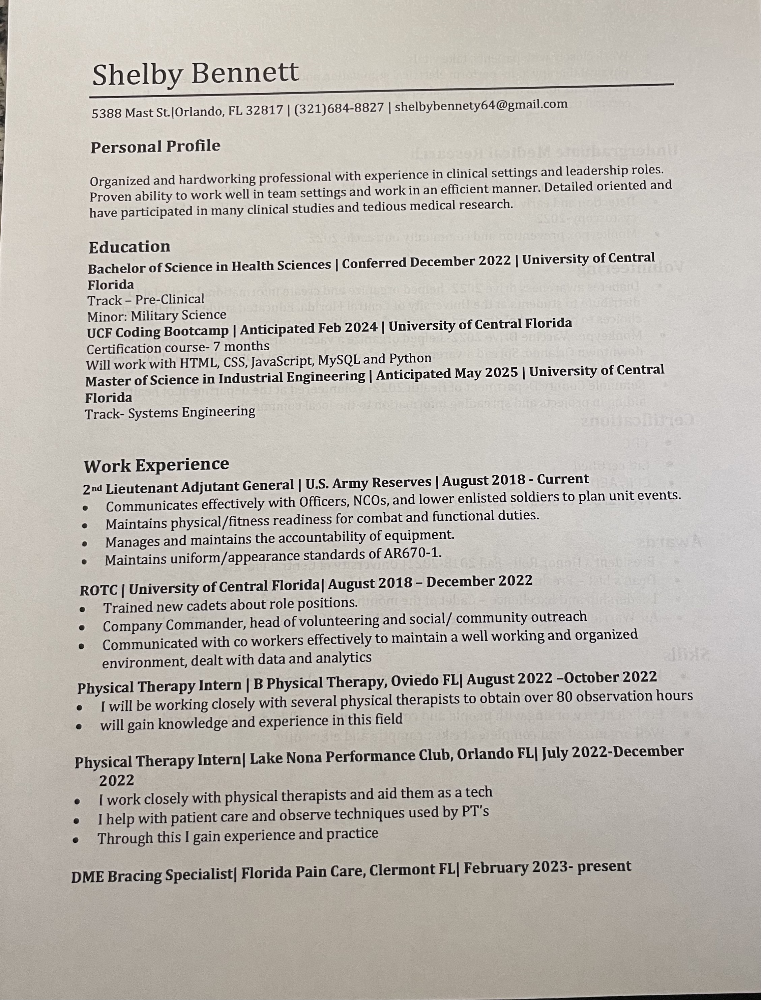
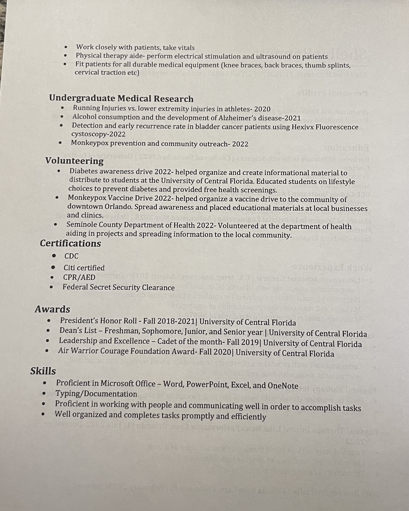

About Me
Hi I'm Shelby, welcome to my portfolio! I graduated from the University of Central Florida in December 2022 with my BS in Health Sciences pre-clinical. I am currently getting my masters at UCF in industrial engineering-systems engineering.I am also taking a bootcamp at UCF for computer coding. My hobbies including running, I have completed marathons and half marathons, and playing with my 2 year old golden retriver Reggie. In December 2022 I also comissioned as an officer in the United States Army. I am a 2LT in the Adjutant General Corp, and I am currently with the 912th AG Comapany in Orlando Florida.
Work
Resume

